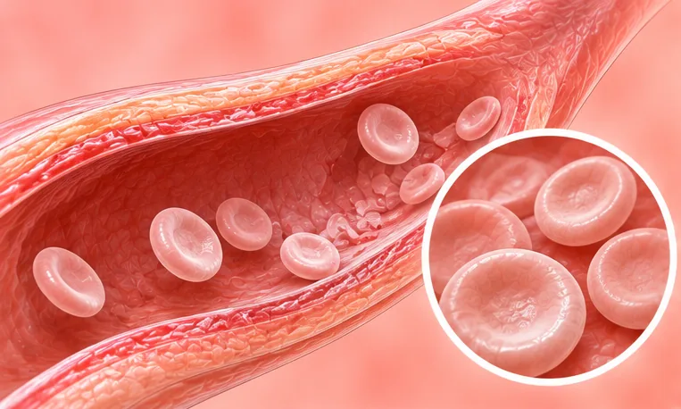
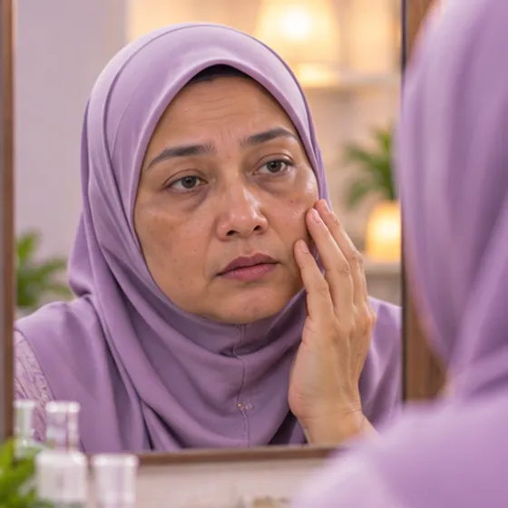
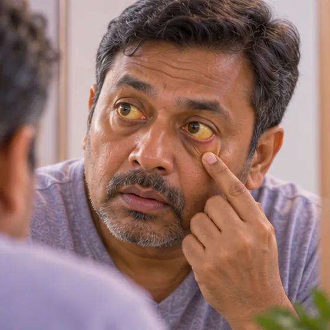

Anemia hemolitik autoimun
Sistem pertahanan badan menyerang sel darah merahnya sendiri
Apa itu
Sistem pertahanan badan tersilap memusnahkan sel darah merah lebih cepat daripada ia dibuat. Ini boleh menyebabkan anemia, keletihan dan kulit kuning.
- Dalam darah
- Masalah sistem imun
- Letih, pucat, kuning
- Jumpa doktor
- Pakar darah (hematologi)
- Biasa pada
- Orang dewasa, lebih kerap pada wanita; boleh juga berlaku pada kanak-kanak
- Berjangkit
- Tidak
- Perjalanan
- Ia boleh datang cepat atau perlahan; perlu rawatan dan susulan doktor
Tanda biasa

Letih sepanjang masaKeletihan 
Muka pucatPucat 
Kulit dan mata kuningJaundis Semput bila naik tanggaDispnea semasa bergiat Jantung berdebar kencangDebaran jantung
Mengapa ia berlaku

Punca belum diketahui sepenuhnyaIdiopatik 
Kesan sampingan sesetengah ubatKesan buruk ubat
Punca lain
- Keadaan imun lain, seperti lupus
- Sesetengah jangkitan
- Sesetengah kanser darah atau kanser lain
Jumpa doktor dahulu jika
- Sakit dada, sukar bernafas teruk atau pengsan: hubungi 999
- Air kencing gelap seperti teh atau kulit dan mata cepat menjadi kuning
- Demam atau sakit perut atau belakang yang teruk
- Kaki bengkak dan sakit atau semput tiba-tiba: hubungi 999
- Bertambah letih atau pucat dalam beberapa hari
Jika mana-mana berkenaan, sila jumpa doktor sebelum sesi.
Halaman ini ialah maklumat am. Sila terus mengambil ubat biasa anda dan terus berjumpa doktor.
Teruskan mengambil ubat biasa anda dan terus berjumpa doktor. Sesi kami ialah sokongan lembut dan tidak menggantikan rawatan perubatan.
Menjaga diri

Berehat secukupnyaRehat Kerap basuh tanganKebersihan tangan 
Ambil ubat seperti disuruh doktorPematuhan ubat Jumpa doktor untuk pemeriksaanSusulan perubatan berkala
Lebih banyak cara menjaga diri
- Ikut pelan pakar darah anda dan teruskan ujian darah
Beritahu ahli terapi anda
- Darah beku atau kaki bengkak yang baru
- Ubat pencair darah
- Demam atau jangkitan aktif
- Penyakit jantung
- Kehamilan
Ahli terapi anda akan menyemaknya bersama anda sebelum bermula.
Soalan dan jawapan
Apakah Anemia hemolitik autoimun?
Sistem pertahanan badan menyerang sel darah merahnya sendiri. Sistem pertahanan badan tersilap memusnahkan sel darah merah lebih cepat daripada ia dibuat. Ini boleh menyebabkan anemia, keletihan dan kulit kuning.
Apakah tanda biasa Anemia hemolitik autoimun?
Letih sepanjang masa · Muka pucat · Kulit dan mata kuning · Semput bila naik tangga · Jantung berdebar kencang
Mengapa Anemia hemolitik autoimun berlaku?
Punca belum diketahui sepenuhnya · Kesan sampingan sesetengah ubat
Bagaimana menjaga diri dengan Anemia hemolitik autoimun?
Berehat secukupnya · Kerap basuh tangan · Ambil ubat seperti disuruh doktor · Jumpa doktor untuk pemeriksaan
Bolehkah sesi AI Body Master membantu Anemia hemolitik autoimun?
Sesi ialah sokongan meridian tanpa jarum yang lembut untuk kesejahteraan anda. Ia tidak merawat atau menyembuhkan Anemia hemolitik autoimun dan tidak menggantikan ubat atau doktor anda. Beritahu ahli terapi anda sebelum sesi bermula.
Keadaan berkaitan
Rujukan: General information based on public health sources such as Mayo Clinic, NHS, Cleveland Clinic and NCBI StatPearls.
Halaman dikemas kini: 2026-11-05